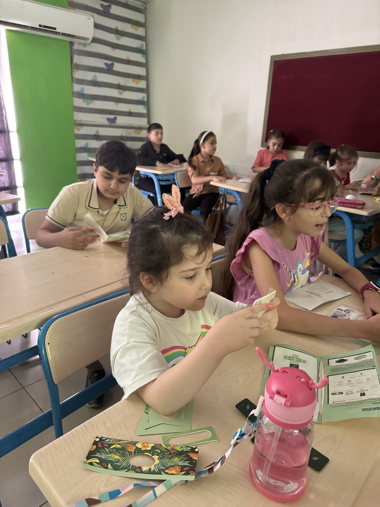
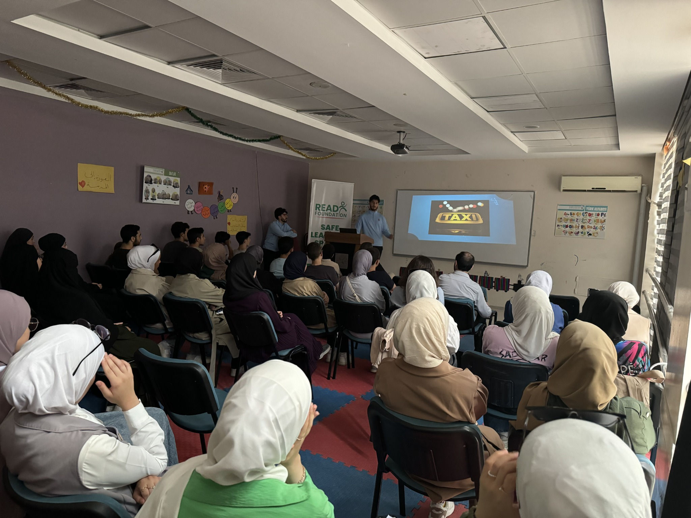

Arabic & cultural reintegration
Arabic learning and programs that help returning Syrian refugees reconnect with the language and cultural context of daily life in Syria.
Supporting learning and helping returning families reconnect with life in Syria.

Classroom learning. The Jarabulus center is preparing to open.
After operating in Turkey for nearly a decade, the center is relocating to Jarabulus, Syria. Its next chapter will support Syrian refugees returning home, children who need help with their schooling, and teachers seeking professional development.
Hope Without Borders Foundation is partnering with the organization that runs the center and helping provide funds for its opening.
Arabic learning and programs that help returning Syrian refugees reconnect with the language and cultural context of daily life in Syria.
Additional academic support to help children with their schooling and strengthen their learning.
International training programs for teachers in Syria, with collaboration from partners in Germany and elsewhere in Europe.
We are helping fund the opening through a partnership with the operating organization. Opening dates, funding needs, and further progress will be shared as they are confirmed.


These photographs illustrate learning activities; they do not document the opening of the Jarabulus center.